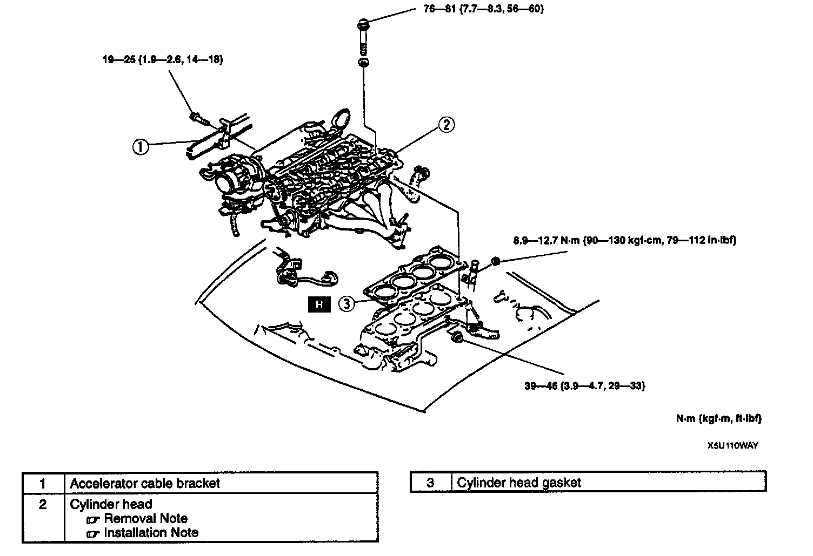
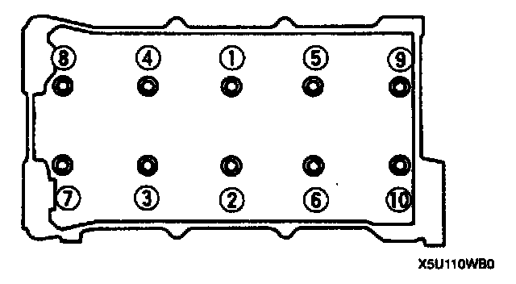

Cylinder Head Gasket: Service and Repair

CYLINDER HEAD GASKET REPLACEMENT
Warning:
^ Fuel vapor is hazardous. It can very easily ignite, causing serious injury and damage. Always keep sparks and flames away from fuel.
^ Fuel line spills and leakage are dangerous. Fuel can ignite and cause serious injuries or death and damage. Fuel can also irritate skin and eyes. To prevent this, always complete the "Fuel Line Safety Procedure". Refer to Powertrain Management.
1. Remove the timing belt.
2. Remove the front pipe and exhaust manifold insulator.
3. Remove the air cleaner.
4. Disconnect the vacuum hose and engine harness connectors.
5. Disconnect the fuel hose. Fuel Delivery and Air Induction
6. Remove the intake manifold bracket.
7. Remove in the order indicated in the table.
8. Install in the reverse order of removal.
9. Verify the engine oil level.
10. Inspect for the engine oil, engine coolant, and fuel leakage.
11. Verify the compression. Compression Check
12. Start the engine and verify the idle speed. Idle Speed
Cylinder Head Removal Note

^ Loosen the cylinder head bolts in two or three steps in the order shown.
Cylinder Head Installation Note

^ Tighten the cylinder head bolts in two or three steps in the order shown.